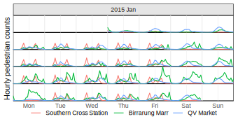
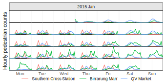

[1] 0.0000000 0.6931472 1.0986123 1.3862944 1.6094379Vectorised Statistics with Composite Data Types
4th December 2025 (Perth, Australia)
Mitchell O’Hara-Wild, Monash University
What are vectors? (aka arrays)
A set of values with the same data type.

Classed vectors encode semantics
Many data types have intrinsic structure, requiring special care in statistical analysis.
🔢 ordinal:
ordered,{forcats}🍀 uncertainty:
p/d/q/r,{distributional}⌛ time:
Date,POSIXt,{hms},{mixtime}🕸️ graph:
{igraph},{tidygraph},{graphvec}🗺️ spatial:
{sp},{sf}
Safer statistics with semantics
Statistical operations leverage their structure to prevent analysis that violate semantics.
Unsafe Stats: R’s distributions
The included distributions in R (and many extension packages) use p/d/q/r functions for statistical operations on distributions.
The p/d/q/r functions
These functions allow you to calculate statistical operations from distributions:
p: The ‘probability’ (CDF)d: The ‘density’ (PDF)q: The ‘quantiles’r: The ‘random’ samples
Some packages also define m functions for moments!

Unsafe Stats: R’s distributions
Using p/d/q/r functions
These operation prefixes are used in conjunction with the distribution’s shape. The general form is:
<op><shape>(<args>, <parameters>)
For example, the density (d) at 0.5 of a Normal (norm) distribution with mean 1 and standard deviation 3 is:
dnorm(q = 0.5, mean = 1, sd = 3)
[1] 0.1311466Semantics not included
These functions are very error-prone since users have the burden of performing valid distributional operations.
Unsafe Stats: R’s distributions
Short and confusing function names
The p/d/q/r functions need memorisation for each shape.
Risky recycling
These p/d/q/r functions are vectorised and fast 🎉
How these functions vectorise inputs is surprising 👻
Unsafe Stats: R’s distributions
R’s model prediction output
Worst of all is how distributions are obtained from models.
Where’s the uncertainty!
By default, predictions only return the expected value.
Unsafe Stats: R’s distributions
Finding uncertainty!
Use se.fit = TRUE in predict() to get standard errors.
$fit
1 2 3 4 5 6
46.10333 51.48517 48.21763 48.40983 49.94750 49.37088
$se.fit
1 2 3 4 5 6
0.4769975 0.4685605 0.3082198 0.3020842 0.3333431 0.3054341
$df
[1] 336
$residual.scale
[1] 2.444663This gives more than just standard errors…
but we’re still missing the shape of the distribution!
Unsafe Stats: R’s distributions
Here’s the code to obtain 95% prediction intervals for the penguins data:
[45.165056, 47.041611]95
[50.563487, 52.406850]95
[47.611342, 48.823910]95
[47.815620, 49.004049]95
[49.291799, 50.603204]95
[48.770072, 49.971680]95Not quite right
The above calculations are for confidence intervals, not prediction intervals! Did you notice? Probably not!
Unsafe Stats: R’s distributions
The correct code for prediction intervals is:
[41.203878, 51.002789]95
[46.588864, 56.381473]95
[43.370784, 53.064468]95
[43.564487, 53.255182]95
[45.094230, 54.800773]95
[44.524716, 54.217036]95Error-prone analysis
There’s a lot to know about regression, distributions, and R functions to get correct prediction intervals.
It’s easy to make mistakes (or ignore uncertainty).
A better alternative?
What if model predictions could directly produce a vector of distributions?
<distribution[6]>
[1] t(336, 46, 2.5) t(336, 51, 2.5) t(336, 48, 2.5)
[4] t(336, 48, 2.5) t(336, 50, 2.5) t(336, 49, 2.5)
Making better distributions

{vctrs} offers two vector types:
This enables multi-parameter distributions:
How can different shaped distributions coexist within the same vector? That’s trickier!
Mixed-type vectors

{vecvec} creates vectors of vectors:
Mixed-type vectors
# A tibble: 5 × 5
family dob_child1 dob_child2 name_child1 name_child2
<int> <date> <date> <chr> <chr>
1 1 1998-11-26 2000-01-29 Susan Jose
2 2 1996-06-22 NA Mark <NA>
3 3 2002-07-11 2004-04-05 Sam Seth
4 4 2004-10-10 2009-08-27 Craig Khai
5 5 2000-12-05 2005-02-28 Parker Gracie
Mixed-type vectors
# A tibble: 25 × 2
name value
<chr> <vecvec>
1 family 1
2 dob_child1 1998-11-26
3 dob_child2 2000-01-29
4 name_child1 Susan
5 name_child2 Jose
6 family 2
7 dob_child1 1996-06-22
8 dob_child2 NA
9 name_child1 Mark
10 name_child2 NA
# ℹ 15 more rows


Mixed-type semantic vectors
{vecvec} is perhaps only useful for mixed-type vectors that share common semantics.
Suitable semantic data-types include:
📊 Distributional (different shapes)
📅 Temporal (different chronons / calendars)
🗺️ Spatial (different geometries)
🗳️ Preferential (different candidates)
Mixed-type semantic vectors
{vecvec} is perhaps only useful for mixed-type vectors that share common semantics.
Better distributions for R
The distributional package makes it simpler to create and use distributions in R.
Creating distributions
All distributions in the package start with dist_*().
The package currently provides:
- 25 continuous distributions,
- 9 discrete distributions,
- p/d/q/r distributions via
dist_wrap(), - sample, degenerate and percentile distributions.

Vectorised distribution statistics
The p/d/q/r functions have more descriptive alternatives:
p->cdf(): The CDFd->density(): The density (PDF)q->quantile(): The quantiler->generate(): Random samples
Distributional operations
These functions are the same for any distribution.
Vectorised distribution statistics
Other operations
There are many more statistics than p/d/q/r.
log_likelihood()/likelihood()hilo()hdr()support()mean()variance()/covariance()skewness()kurtosis()
Vectorised distribution statistics
Perform statistics alongside distributions.
# A tibble: 6 × 5
dist mean var pdf cdf
<dist> <dbl> <dbl> <dbl> <dbl>
1 Pois(4) 4 4 0.0733 0.0916
2 Pois(2) 2 2 0.271 0.406
3 Pois(6) 6 6 0.0149 0.0174
4 N(1, 9) 1 9 0.133 0.5
5 N(3, 4) 3 4 0.121 0.159
6 N(-1, 16) -1 16 0.0880 0.691 Modifying distributions
Distributions can be transformed using mathematical operations.

Other semantic vectors

📅 Temporal
🗳️ Preferential
[1] [Beverly Hills Cop > Mean Girls > Mission: Impossible II > The Mummy Returns]
[2] [Mean Girls > Beverly Hills Cop > Mission: Impossible II > The Mummy Returns]
[3] [Beverly Hills Cop > Mean Girls > The Mummy Returns > Mission: Impossible II]
Combining semantic vectors

Forecasts from {fable} combines {mixtime} and {distributional} vectors.
# A fable: 10 x 4 [1Y]
# Key: .model [1]
.model index value .mean
<chr> <mixtime> <dist> <dbl>
1 ARIMA(value) 1989 N(145, 240) 145.
2 ARIMA(value) 1990 N(165, 582) 165.
3 ARIMA(value) 1991 N(161, 819) 161.
4 ARIMA(value) 1992 N(136, 915) 136.
5 ARIMA(value) 1993 N(98, 928) 98.3
6 ARIMA(value) 1994 N(62, 929) 61.8
7 ARIMA(value) 1995 N(38, 938) 37.9
8 ARIMA(value) 1996 N(33, 941) 33.4
9 ARIMA(value) 1997 N(48, 947) 48.5
10 ARIMA(value) 1998 N(77, 1006) 77.0Visualising distributions
The {ggdist} and {ggdibbler} packages extend {ggplot2} with distributional graphics.


 
Thanks for your time!
Final remarks
- Endless semantic combinations for stats and data viz.
- Safe statistics respects data semantics.
- Vectorised code 🤝 statistical analysis.
- Analysis workflows are better with semantic vectors.

Vectorised operations
Vectorised operations in distributional are safer than the p/d/q/r equivalents.
Vectorising in two ways
There are two types of operation arguments:
vector/matrixinputsVectorises across distributions, then arguments.
This approach is simpler, especially single arguments.
list/data.frameinputsVectorises across arguments, then distributions.
This approach is more flexible and powerful.
Vectorised operations (vectors)
<distribution[3]>
[1] N(0, 1) Beta(5, 1) Γ(2, 1) Vectors/matrices apply the same operation inputs to each distribution.
Vectorised operations (vectors)
Distributions in data analysis
This also works well with data frames.
# A tibble: 3 × 2
y `density(y, at = 0.65)`
<dist> <dbl>
1 N(0, 1) 0.323
2 Beta(5, 1) 0.893
3 Γ(2, 1) 0.339Vectorised operations (lists)
<distribution[3]>
[1] N(0, 1) Beta(5, 1) Γ(2, 1) Lists/data.frames recycle each input argument to the length of distributions.
Vectorised operations (lists)
<distribution[3]>
[1] N(0, 1) Beta(5, 1) Γ(2, 1) This also allows vectorisation across both inputs and distributions.
Vectorised operations (lists)
Distributions in data analysis
This also works really well with data frames.
# A tibble: 3 × 2
y d1
<dist> <dbl>
1 N(0, 1) 0.323
2 Beta(5, 1) 0.893
3 Γ(2, 1) 0.339